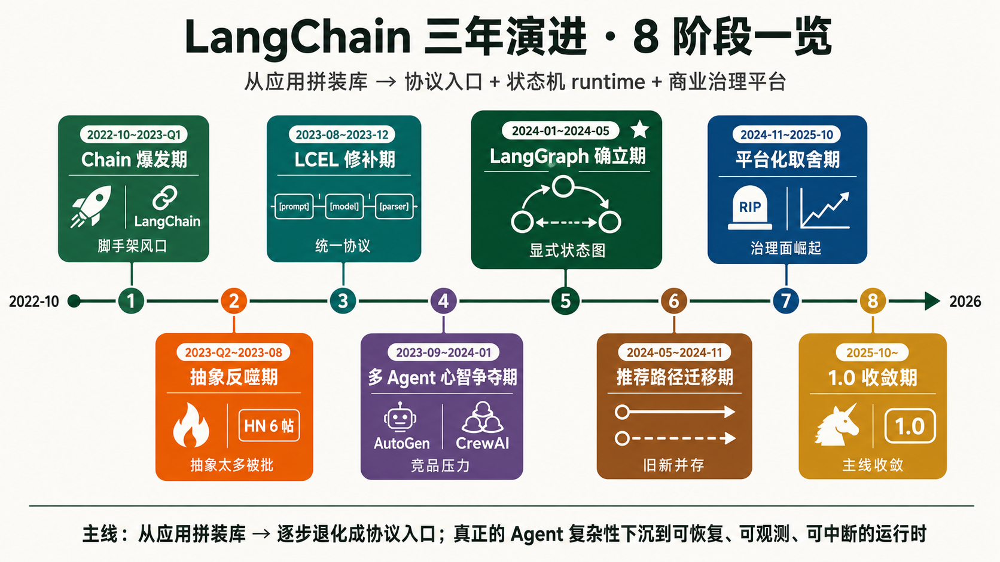
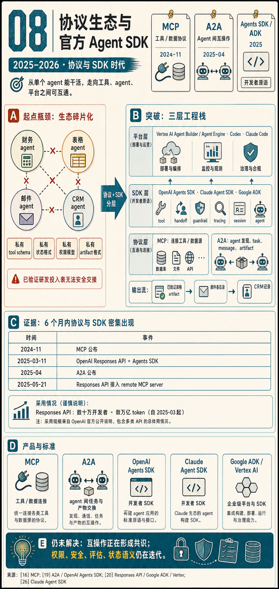
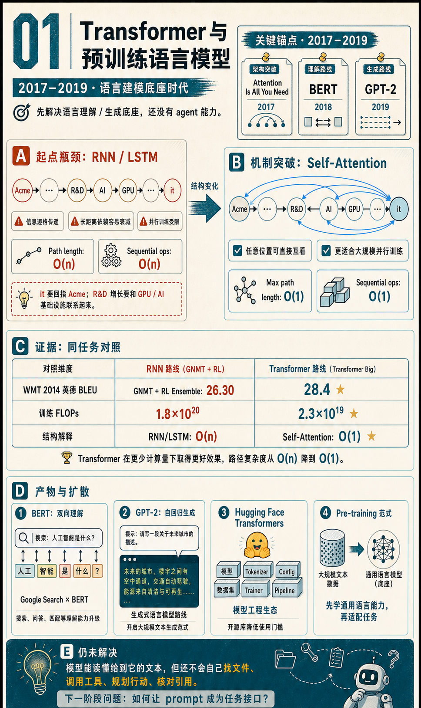

Agent 知识包：3 层架构 + LangChain 8 阶段演进 + 风控落地
12 份相互交叉引用的长文。主线：「信息层 + 运行时层 + 保证层」三层心智图统一 12 个 Agent 组件 → LangChain 三年演进 8 阶段五段式（带社区硬数据）→ 风控生产场景 12 组件 × 5 链路 A/B 二分。 每段配 ChatGPT image2 生成的中文信息图。

这里会持续记录 agent、workflow、orchestration、harness、MCP、A2A、Agents SDK 等主题。目标不是堆资料，而是把来源、术语、阶段、例子、证据和图解整理成可以反复调用的个人知识系统。

每个专题都尽量做到：有明确来源、有术语解释、有例子牵引、有证据支撑、有结构化图解。
12 份相互交叉引用的长文。主线：「信息层 + 运行时层 + 保证层」三层心智图统一 12 个 Agent 组件 → LangChain 三年演进 8 阶段五段式（带社区硬数据）→ 风控生产场景 12 组件 × 5 链路 A/B 二分。 每段配 ChatGPT image2 生成的中文信息图。

从语言建模底座开始，追踪 scaling、instruction alignment、reason/action 原语、 workflow 与 agent loop、状态化框架、coding harness、协议与 SDK 的出现原因和边界。

用"立项决策三角"（必然性 / 窗口性 / 可控性）作为认知框架，论证一个 ¥1500 万 / 6-12 周 / 1 个内容安全子场景 shadow 实验该不该立。 基于跟 codex（扮演快手 COO + CTO）的多轮硬推演，含三角形 mental model、终态架构、Agent 数据飞轮 + 自进化、CTO 8 条硬条件。
后续内容会围绕这些入口继续拆分，避免把模型、框架、产品、协议和工程实践混成一团。
当前阶段：先把个人主页拆成“首页 + 专题页 + 资源目录”的静态知识库骨架。
下一步：逐步加入术语索引、资料来源库、专题图册、更新日志，以及面向 agent 的结构化内容数据。